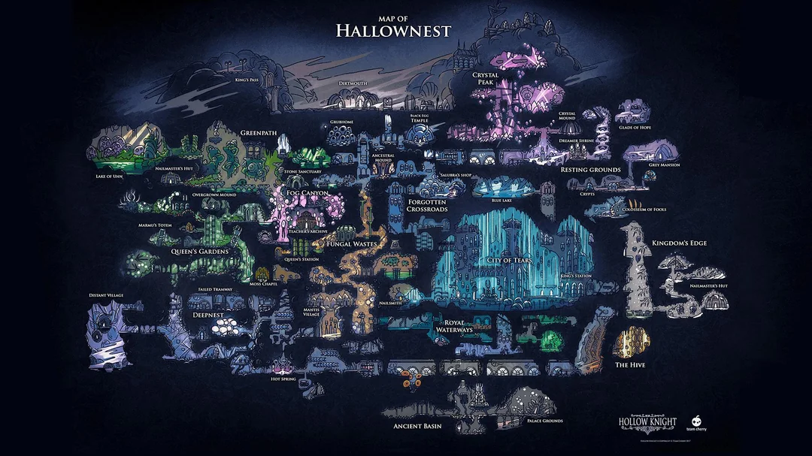
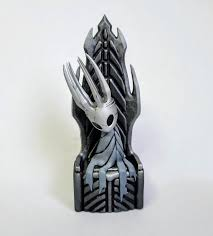
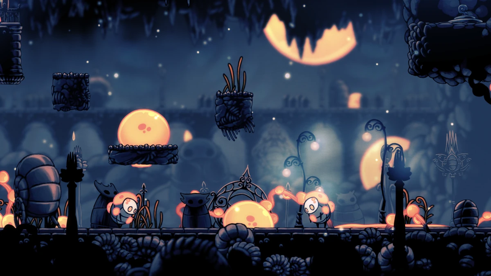

Hallownest

El Nacimiento de una Civilización
Hallownest fue, en su apogeo, el reino más vasto y avanzado bajo la superficie. Fue fundado por el Rey Pálido, una entidad antigua conocida como Wyrm que abandonó su forma gigantesca para adoptar una apariencia más pequeña y poder guiar a los insectos hacia la autoconsciencia. Antes de su llegada, las tribus de Hallownest vivían en un estado de salvajismo o bajo la influencia mental de otras deidades.
"No aceptes sueños: solo este reino es real, y su rey es su alma." – Proclama grabada en las entradas del reino.
El Rey Pálido
El Rey Pálido llegó a Hallownest y otorgó a los insectos el regalo de la mente y el habla. A cambio, pidió lealtad absoluta. Bajo su mandato, se construyeron maravillas tecnológicas como los Ciervos Caminantes, los Tranvías y la majestuosa Ciudad de Lágrimas.
Su poder era tal que podía prever el futuro, pero fue precisamente ese miedo al destino lo que lo llevó a tomar decisiones drásticas para proteger su legado de la Infección.

La Edad de Oro
Durante siglos, Hallownest prosperó. El comercio floreció entre los Páramos Fúngicos y la Ciudad, mientras que los guerreros más poderosos se entrenaban para formar parte de la élite del Rey.
El Palacio Blanco
El centro neurálgico del reino, una estructura brillante que fue escondida en el Reino de los Sueños para proteger al Rey tras la caída del imperio.
Las Cinco Grandes Caballeros
Isma, Ze'mer, Hegemol, Dryya y Ogrim. Los protectores legendarios que mantenían la paz en las fronteras de Hallownest.
La Infección: El Regreso de la Luz
El declive comenzó cuando Destello (The Radiance), la antigua deidad del sol olvidada por los insectos, empezó a aparecer en sus sueños. Esta "luz" prometía unidad, pero en realidad consumía la voluntad de los infectados, convirtiéndolos en bestias violentas de ojos naranjas.

Para detenerla, el Rey intentó sellar la Infección dentro de un Receptáculo (Vessel). Hallownest se estancó en el tiempo: los comercios cerraron, las rutas se perdieron y los ciudadanos se convirtieron en cascarones vacíos que vagan por los túneles hasta el día de hoy.
Hallownest en la Actualidad
Lo que el Caballero encuentra al llegar es un cementerio masivo. Un reino en estasis donde solo unos pocos supervivientes (como Quirrel, Zote o Sly) mantienen la esperanza o buscan respuestas entre las ruinas. La gloria de Hallownest ahora es solo un eco atrapado en el metal frío de sus armaduras y en el susurro de sus vientos.